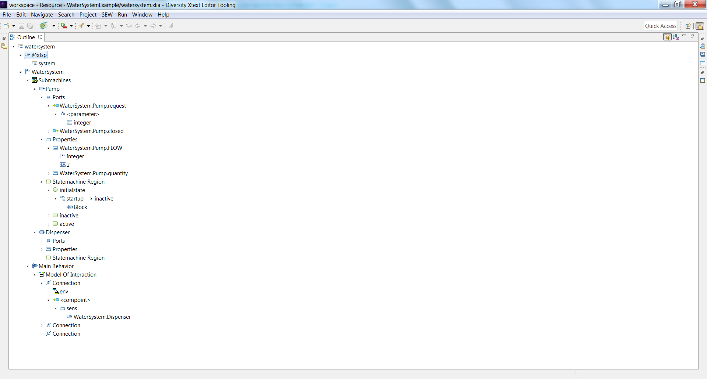

The "Model Explorer" or "Outline" displays a representation of the project content into a hierarchy of concepts that form a model. This outline is updated and evolves as the user types on the XLIA editor.
Here is a snapshot of the model explorer :
